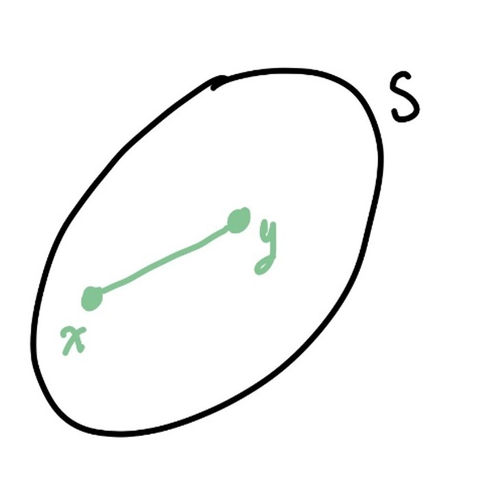
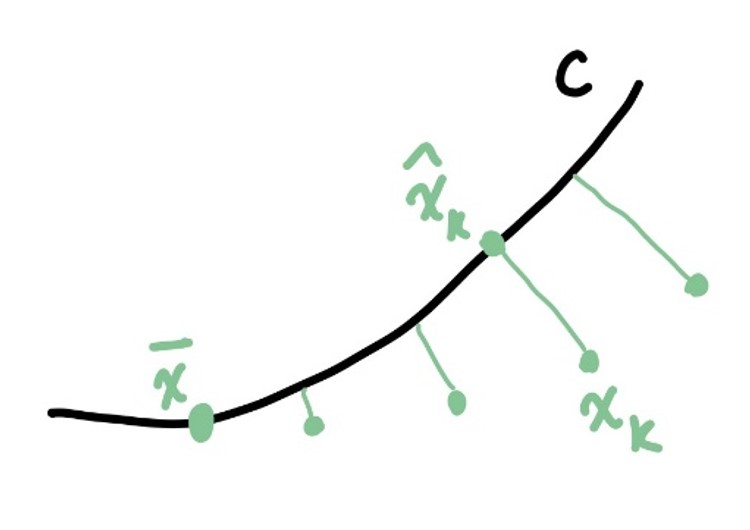

1 Introduction
This document is a write-up of the Optimisation Theory and Applications course (MTHE434) taught by Bahman Gharesifard in 2016 at Queen’s University. The vast majority of the content is from Bahman’s notes, with some comments from me (Emma Hansen).
1.1 Examples of Optimisation Problems
Example: 150BC – Alexandria’s Problem
Find a point \(D\in\mathbb{R}^2\) such that \(||AD||+||DB||\) is minimised.
Consider the figure below.
Claim: this \(D\) is the solution.
Proof. Suppose otherwise, i.e. let some point \(D'\) be the minimiser:
\[\begin{aligned} ||AD'|| + ||D'B|| &\geq ||AB'|| \textrm{ (from the claim)} \\ &= ||AD|| + ||DB'|| \\ &= ||AD|| + ||DB|| \end{aligned}\]
Why is this true? Triangle inequality! Thus, \(D\) is the minimiser. ■
Example: 850BC – Dido’s Problem
Consider a curve of fixed length \(\ell\). What is the maximum area of land you can enclose using this curve?
To start, think about what kind of shape you should use.
Formally, the problem is: \(\max_y \ \ J(y) = \int_a^b y(x) dx, \ y\in\mathcal{C}([a,b])\).
It turns out the optimal shape is a semicircle, but we will not be able to prove this even at the end of the course.
Example: 1556 – Tartaglia’s Problem
This problem is also known as the Cardano-Tartaglia problem.
Pick two numbers \(x\) and \(y\) such that:
- they sum to 8: \(x+y = 8 \Rightarrow y = (8-x)\)
- their product, \(xy\), and difference, \(x-y\), is maximised
Today this problem is easy to solve (because of calculus): we need to maximise \(f(x) = (xy)(x-y) = x(8-x)(x-(8-x)) = -2x^3 + 24x^2 - 64x\).
Solution: \(x = 4(1-\frac{1}{\sqrt{3}})\).
Example: 1954 – Max-flow
Consider a directed graph \(\mathcal{G}(V,E)\).
Let each edge \(ij\) have a capacity \(c_{ij}\).
We are looking for a map \(f:E\rightarrow \mathbb{R}_{\geq 0}\) such that
- \(f(ij)\leq c_{ij}\)
- Flow is conserved at each vertex: incoming = outgoing
With these conditions, we want to maximise flow across the graph: \(\max \ |f|\) over all routes through the graph.
1.2 Notations
- For parts of this course, we work with functionals on normed vector spaces. We usually consider functions on subsets of \(\mathbb{R}^n\).
\[\begin{aligned} &f: D\subset\mathbb{R}^n \rightarrow \mathbb{R},\\ &f: E \rightarrow \mathbb{R}, \ E \textnormal{ a normed vector space}. \end{aligned}\]
- We usually assume \(f\) is differentiable, specifically Fréchet or Gâteaux differentiable. Nevertheless, we denote gradient (or derivative) of \(f\) by \(\nabla f\):
\[\nabla f = (\frac{\partial f}{\partial x_1},...,\frac{\partial f}{\partial x_n})^T\]
1.3 References
2 Introduction to Optimisation
Definition 1 (Local and Global Minimisers/Maximisers) Let \(f:\mathcal{U}\rightarrow\mathbb{R}\), where \(\mathcal{U}\subset\mathbb{R}^n\). Then \(x^*\in\mathcal{U}\) is a:
- local minimiser if there exists a neighbourhood of \(x^*\) such that \(f(x^*)\leq f(x)\) for all \(x\) in this neighbourhood. If this is true for all \(x\in\mathcal{U}\), \(x^*\) is a global minimiser.
- local/global maximiser defined similarly.
Theorem 1 (Weierstrass, 1858) Let \(K\) be a compact set in a topological space. Let \(f:K\rightarrow\mathbb{R}\) be a continuous function. Then, there exists \(x^*\in K\) such that \(f(x^*)\leq f(x)\) for all \(x\in K\).
Proof. Recall that \(K\) is compact if every open cover of \(K\) has a finite subcover.
We prove Theorem 1 in two steps.
Step 1: We show that \(f\) is bounded from below. Let \(K_n = \{ x\in K | f(x) > n\}\) (open sets). Then,
\[ K = \cup_{n=-\infty}^\infty K_n.\]
Since \(K\) is compact, there exists a finite subcover \(\{K_{n_i}\}_{i=1}^k\)
\[ K = \cup_{i=1}^k K_{n_i}. \]
Let \(\tilde{n} = \min\{n_i \mid i=1,...,k\}\). Then, \(K_{\tilde{n}} = K\).
By definition of \(K_n\), we now let
\[f^* = \inf\{ f(x) | x\in K\} = \inf\{f(x) | f(x) >\tilde{n}\} > -\infty. \]
Therefore \(f\) is bounded from below.
Step 2: We show that \(f\) has a gloal minimizer. Suppose otherwise and let:
- \(Y_n = \{x\in K | f(x) > f^* + \frac{1}{n}\}\) (open)
- \(K = \cup_{n=1}^\infty Y_n\) again. Using compactness and a similar argument as before, there exists \(\tilde{n}>1\) such that \(K = Y_{\tilde{n}}\).
Thus we have that \(f(x)>f^* + \frac{1}{\tilde{n}}\) for all \(x\in K\). This, however, contradicts the definition of \(f^*\) as the infimum. ■
Remark: Compactness is a good assumption in finite dimensional spaces, but often not in infinite dimensional spaces. The reason is that this assumption is too strong. For example, the unit ball in \(C^0([0,1])\) is not compact. (In fact, this statement can be proved using Weierstrass theorem! You can show there exists a minimiser which is not continuous.) Weierstrass theorem doesn’t work well for infinite dimensions.
We now go about relaxing compactness.
Theorem 2 Suppose \(F: E\rightarrow\mathbb{R}\) is continuous. If \(f\) has a non-empty compact sublevel set, i.e. \(\{x\in E | f(x) \leq \alpha\}\) for some \(\alpha\in\mathbb{R}\), then \(f\) achieves a global minimum.
This means that if the set of values of a function that are less than \(\alpha\) is finite, a minimum exists.
Proof. Pretty straightforward. For an idea, see the figure.
Definition 2 (Coercive function) A function \(f:E\rightarrow\mathbb{R}\) is call coercive if
\[ ||x||\rightarrow\infty \ \ \Rightarrow \ \ f(x) \rightarrow\infty .\]
Note: here, \(E\) is any normed vector space.
Proposition 1 If \(f:D\rightarrow\mathbb{R}\), where \(D\) is closed and \(f\) is continuous, then \(f\) achieves a global minimum on \(D\).
Proof. Since \(F\) is continuous and \(D\) is closed, we have that \(\{x\in D | f(x) \leq \alpha\}\), \(\alpha\in\mathbb{R}\), is closed.
We claim that this set is also bounded: Suppose otherwise, then there is a sequence \(||x_n||\rightarrow\infty\). Then, using coercivity \(|f(x)|\rightarrow\infty\) on this sublevel set, which is a contradiction! Thus, the sublevel set is also bounded.
By the previous result, since the sublevel set is compact, we have a global minimum. ■
2.1 Unconstrained Optimisation
Let \(f:\mathbb{R}^n\rightarrow\mathbb{R}\),
\[ \min_{x\in\mathbb{R}^n} \ \ f(x) \]
is an unconstrained optimisation problem.
2.1.1 Necessary Conditions of Optimality
Consider a \(C^1\)-function \(f\) on \(\mathbb{R}^n\) and suppose tht \(x^*\) is a local minimum of \(f\) in some open set \(D\subset \mathbb{R}^n\). Note that \(x^*\) is in the interior of \(D\).
Let \(d\) be some vector in \(\mathbb{R}^n\), and \(\alpha\in\mathbb{R}\). Consider:
\[g(\alpha) = f(x^* + \alpha d).\]
Note that: \(\alpha = 0\) is the local minimum of \(g\). Using a first order approximation:
\[ g(\alpha) = g(0) + g'(0)(\alpha - 0) + \mathcal{O}(\alpha),\]
where \(\lim_{\alpha\rightarrow } \frac{\mathcal{O}(\alpha)}{\alpha} = 0\).
Lemma 1 We have that \(g'(0) = 0\).
Proof. Suppose otherwise. Then for \(\varepsilon >0\) small enough and \(\alpha \neq 0\) with \(|\alpha|<\varepsilon\), we have
\[\begin{aligned} |g'(0) \alpha| > |\mathcal{O}(\alpha)|\\ \Rightarrow g(\alpha) - g(0) < g'(0) \alpha + |g'(0)\alpha| \end{aligned}\]
If we let \(\alpha\) have the opposite sign (since \(\alpha\) is any number in \(\mathbb{R}\)) of \(g'(0)\), then \(g(\alpha) < g(0)\). Which is a contradiction! Thus \(g'(0)=0\). ■
Now, with \(g'(0) = 0\), we consider what this means for \(f\).
\[\begin{aligned} g'(\alpha) &= \nabla f (x^* + \alpha d) \cdot \vec{d} \\ &= \sum_{i=1}^n \frac{\partial f}{\partial x_i}(x^* + \alpha d) \cdot d_i \end{aligned}\]
Then, \(g'(0) = \nabla f(x^*) \cdot d = 0\) for all \(d\in\mathbb{R}^n\). Thus, \(\nabla f(x^*) = 0\). This is the first necessary condition of optimality.
2.1.2 Sufficient Conditions of Optimality
Consider now the function \(f\), this time in \(C^2\).
\[g(\alpha) = g(0) + g'(0) \alpha + \frac{1}{2}g''(0)\alpha^2 + \mathcal{O}(\alpha^2),\]
with \(\lim_{\alpha\rightarrow 0} \frac{\mathcal{O}(\alpha^2)}{\alpha^2} = 0\).
Lemma 2 If \(x^*\) is a local minimum, then \(g''(0) \geq 0\).
Proof. Suppose otherwise. I.e. \(g''(0) < 0\). Then, or \(\alpha\) small enough, we have
\[\frac{1}{2} |g''(0)|\alpha^2 > \mathcal{O}(\alpha^2). \]
Since we know that \(g'(0) = 0 \Rightarrow g(\alpha) - g(0) < \frac{1}{2} g''(0)\alpha^2 + \frac{1}{2}|g''(0)|\alpha^2\) and \(\frac{1}{2}g''(0)\alpha^2 <0\), then $g()- g(0) <0 $, which is contradicts \(g(0)\) being the minimiser! ■
Let us compute \(g''(0)\):
\[\begin{aligned} g''(\alpha) &= \frac{d}{dx} g'(\alpha) \\ &= \frac{d}{d\alpha} \sum_{i=1}^n \frac{\partial f}{\partial x_i}(x^* + \alpha d) d_i \\ &= \sum_{i=1}^n \sum_{j=1}^n \frac{\partial^2 f}{\partial x_i \partial x_j} (x^* + \alpha d) d_i d_j \end{aligned}\]
Then, \(g''(0) = \sum_{i,j = 1}^n \frac{\partial^2 f}{\partial x_i \partial x_j} (x^*)d_i d_j = d^T \nabla^2 f(x^*) d\). And since \(g''(0)\geq 0\), then \(d^T \nabla^2 f(x^*) d \geq 0\) for all \(d\), which implies \(\nabla^2 f(x^*)\) is symmetric and positive semidefinite.
Consider an \(n\times n\) real symmetric matrix \(A\in\mathbb{R}^{n\times n}\). It is well known and easy to show that \(A\) has real eigenvalues, denote these by \(\lambda_1,...,\lambda_n\in\mathbb{R}\), with corresponding eigenvectors \(\vec{u}_1,...,\vec{u}_n\) such that \(\langle \vec{u}_i, \vec{u}_j\rangle = 0\) when \(i\neq j\), and \(||\vec{u}_i|| = 1\). Let now
\[ \Lambda = \left[\begin{array}{ccc} \lambda_1 & ... & 0 \\ \vdots & \ddots & \vdots \\ 0 & ... & \lambda_n \end{array}\right] = \texttt{diag}(\lambda_1,...,\lambda_n), \ \ U = \left[\vec{u}_1,...,\vec{u}_n \right].\]
Note that \(AU = \left[A\vec{u}_1,...,A\vec{u}_n \right] = \left[\lambda_1\vec{u}_1,...,\lambda_n\vec{u}_n \right] = U\Lambda\).
Since \(U^T U = I_n\) (identity), then \(A = A(U U^T) = (AU)U^T = U\Lambda U^T\). (note: \(U\) is non-singular).
Theorem 3 (Spectral Decomposition of Symmetric Matrices) Let \(A\) be a real symmetric matrix. Then, \(A\) can be written as
\[ A = U \Lambda U^T.\]
Corollary 1 \(A\) is positive semidefinite if and only if all eigenvalues of \(A\) are non-negative. Similarly, positive definite if and only if all eigenvalues are strictly positive.
Proof. By the previous result,
\[\begin{aligned} d^T A d &= d^T U\Lambda U^T d \\ &= (U^Td)^T \Lambda (U^T d) \end{aligned}.\]
Since \(U\) is non-singular, we have that \(d^T A d\geq 0\) for all \(d\) if and only if \(d^T \Lambda d\geq 0\) for all \(d\).
\[ \begin{aligned} d^T \Lambda d &= \sum_{i=1}^n \lambda_a d_i^2 \geq 0 \ \ \forall d_i \\ &\Rightarrow \lambda_i \geq 0 \ \forall i. \end{aligned}\]
The proof of the second part is similar. ■
It is easy to see that the necessary conditions we have are not sufficient. For example, take \(f: x\mapsto x^3\). However, if \(f\) is in \(C^2\) and \(\nabla f (X^*) = 0\), \(\nabla^2f(x^*) \prec 0\), then \(x^*\) is a minimiser.
Proof. To show this, note that
\[f(x^* + \alpha d) = f(x^*) + \frac{1}{2}\alpha^2 d^T\nabla^2 f(x^*) d + ... \ .\]
Again, we can choose $small enough to have
\[ \frac{\alpha^2}{2} d^T \nabla^2 f(x^*) d > |\mathcal{O}(\alpha^2)|.\]
Since \(\nabla^2 f(x^*)\) is positive definite, then \(f(x^* + \alpha d) > f(x^*)\) for all \(d\). Thus, \(x^*\) is a local minimum! ■
Note that: \(\alpha\) depends on \(d\). If \(|\alpha| < \varepsilon^*(d)\), different \(d\) will result in different \(\varepsilon\), thus, choose the smallest \(\varepsilon\). Without loss of generality assume \(||d|| = 1\), \(\varepsilon^* = \min(\varepsilon(d))\) which results from Weierstrass theorem.
Example: Arithmetic-Geometric mean inequality
We show that: for \(x_i>0 \in\mathbb{R} \ \forall i\)
\[ (x_1 \cdot ... \cdot x_n)^{1/n} \leq \frac{1}{n} \sum_{i=1}^n x_i .\]
Proof. Let \(y_i = \ln(x_i)\) and let
\[ f(y_1,...,y_n) \triangleq \frac{1}{n} \sum_{i=1}^n e^{y_i} - e^{\frac{y_1 + ... + y_n}{n}} \]
(this came from replacing \(x_i\) with \(e^{y_i}\) in the statement.)
Note that we want tot show \(f(y_1,..,y_n) \geq 0\). This is the same problem as above. It is enough to show that \(f\) acheives its minimum value at zero.
To do this, use the first order condition of optimality:
\[ \frac{\partial f}{\partial y_i} = \frac{1}{n} e^{y_i} - \frac{1}{n} e^{\frac{y_1 + ... + y_n}{n}} \ \ \forall i \]
which are zero if and only if \(e^{y_i} = e^{\frac{y_1 + ... + y_n}{n}} \ \Rightarrow y_i = \frac{y_1 + ... + y_n}{n}\) for all \(i\). (Check this for yourselves).
This gives a system of linear equations with solution \(y_i = \frac{Y}{n}\) for all \(i\). i.e. picked all \(y_i\) to be the same for any value of \(Y\in\mathbb{R}\).
Note that \(f\left(\frac{Y}{n},...,\frac{Y}{n}\right) = 0\).
We now need to justify that we have a global minimiser. (And, ideally a unique one.)
We reduce the problem over the set
\[\{(y_1,...,y_n) | \sum_{i=1}^n y_i = Y\}\]
for some \(Y\in\mathbb{R}\). Using this, and by eliminating \(y_n\) (by saying \(y_n = Y - y_1 - ... - y_{n-1}\)), define
\[g(y_1,...,y_{n-1}) = \frac{1}{n}\left( e^{y_1} + ... + e^{y_{n-1}} + e^{Y - y_1 - ... - y_{n-1}}\right) - e^\frac{Y}{n}.\]
It is easy to check now that \(g\) has a unique critical point
\[y_i = \frac{Y}{n}, \ \ i\in\{1,...,n-1\}.\]
The function \(g\) is coercive and hence has a global minimum, which has to be
\[y_i = \frac{Y}{n}, \ \ i\in\{1,...,n-1\}.\] ■
2.2 Constrained Optimisation
- we assume for now that \(D\) is not of lower dimension, \(D\subseteq \mathbb{R}^n\)
- \(D\) is assumed to be closed and bounded
We wish to study the minimisers of
\[f: D\rightarrow \mathbb{R}\]
We can even assume that \(f\) has a minimiser in \(D\). This minimiser could be on the boundary.
Note that we cannot conclude that if
\[ g(\alpha) = f(x^* + \alpha d),\]
where \(d\) is a feasible direction, we have \(g'(0) = 0\) (since \(\alpha\) is dependent on \(d\)). We still have that, for \(\alpha>0\) small enough,
\[\begin{aligned} & g(\alpha) - g(0) < g'(0)\alpha + |g'(0)|\alpha \\ \Rightarrow & g(\alpha) - g(0) < \alpha (g'(0) + |g'(0)|). \end{aligned} \tag{1}\]
\(g'(0)\geq 0\).
Proof. Suppose otherwise (ie. \(g'(0)<0\)). By choosing \(\alpha>0\) small enough and using Equation 1 we have
\[\begin{aligned} & g(\alpha) < g(0) \\ \Rightarrow & g'(0) \geq 0 \end{aligned}\]■
Recall $g’(0) = f(x^*)d $. (from first order optimality).
One can also conclude a weaker version of the second order condition of optimality:
\[d^T \nabla^2 f(x^*) d \geq 0\]
when \(\nabla f(x^*)\cdot d = 0\), which we call the second order condition of optimality.
We cannot use \(x^* + \alpha d\)! Doing so would take us out of the surface.
Minimise \(f(x)\) subject to \(D\).
This optmisation problem can be written as
\[\left\{ \begin{array}{ll} \min f(x) & \\ h_i(x) = 0 & i=1,...,m \end{array} \right. ,\]
where \(D\) is described usin functions \(h_i\).
What if instead we use some curves, \(\gamma(\cdot)\), passing through \(x^*\), ie. we take \(\gamma(0) = x^*\). Let us take these curves to be at least \(C^1\).
Let us define \(g(\alpha) = f(\gamma(\alpha))\). We can now carry the same argument as before, using \(g(\alpha) = g(0) + \alpha g'(0) + \mathcal{O}(\alpha)\), and argue that
\[\nabla f(\gamma(0))\cdot \gamma'(0) = 0.\]
We need to study this \(\gamma'(0)\) more carefully.
Note that \(\gamma'(0)\) lives in the so called tangent space at \(x^*\) which we denote by \(T_{x^*}D\) (this is a subspace of \(\mathbb{R}^n\)). We have not used \(h_i(\gamma(\alpha)) = 0 \ \forall i\), differentiating to get \(\nabla h_i(\gamma(\alpha)) \cdot \gamma'(\alpha) = 0\). Choosing \(\alpha = 0\), we have
\[\nabla h_i(x^*) \cdot \gamma'(0) = 0\]
We assume that \(x^*\) is regular. This means that the gradients \(\nabla h_i(x^*)\) for \(i\in\{1,...,m\}\) are linearly independent.
Note that since \(x^*\) is regular, it’s also true that any vector \(d\in\mathbb{R}^n\) for which \(\nabla h_i(x^*) \cdot d = 0\) for all \(i\) has to lie in the tangent space \(T_{x^*}D\). (check this on your own)
In summary, we showed that
\[\nabla f(x^*)\cdot d = 0 \tag{2}\]
for all \(d\) such that \(\nabla h_i(x^*)\cdot d = 0\) for all \(i\).
Proposition 2 If Equation 2 holds, and \(x^*\) is regular, then we have that
\[\nabla f(x^*) \in \texttt{span}\{\nabla h_i(x^*), \ i\in\{1,...,m\}\}.\]
ie. there exists a \(\lambda_i^*\in\mathbb{R}\) such that
\[\nabla f(x^*) + \lambda_1^* \nabla h_1(x^*) + ... + \lambda_m^* \nabla h_m(x^*) = 0.\]
These \(\lambda_i^*\) are called Langrange multipliers.
Proof. Use contradiction, do on your own.
3 Convex Analysis
We start by discussing affine sets and maps.
Definition 3 (Affine Set - informal) A set \(A\subseteq\mathbb{R}^n\) is affine if for all \(x,y\in A\), the full line connecting \(x\) and \(y\) is in \(A\).
Definition 4 (Affine Set - formal) A set \(A\subseteq \mathbb{R}^n\) is affine if and only if for all \(x,y\in\ A\) and \(t\in\mathbb{R}\),
\[ (1-t) x + t y \in A.\]
Theorem 4 \(V\subseteq\mathbb{R}^n\) is a linear subspace if and only if \(V\) is affine and \(0\in V\).
Proof. \(\Rightarrow\) immediate
\(\Leftarrow\) Suppose \(V\) is affine and \(0\in V\). Need to check scalar multiplication and vector addition.
Scalar multiplication: let \(\alpha \in\mathbb{R}\), \(u\in V\), then \(\alpha u = \alpha u + (1-\alpha)0 \in V\)
Addition: let \(u,w\in V\). Then, \(u + w = 2 (\frac{1}{2}u + \frac{1}{2}w)\), which is in the form \(\alpha u + (1-\alpha)w\), and is therefore in \(V\) since \(V\) is affine. Since \(V\) is also closed under scalar multiplication, we conclude that \(u+w\in V\). ■
A set \(A\in\mathbb{R}^n\) is affine if and only if \(A-a\) is a linear subspace for all \(a\in\mathbb{R}\).
Proof. In text (Güler 2010).
One of the most important examples of an affine set in \(\mathbb{R}^n\) is an \((n-1)\) dimensional hyperplane. A hyperplane is an \((n-1)\) dimensional set.
For any hyperplane \(H\subseteq\mathbb{R}^n\), we have
\[H = L + a,\]
for some \(a\in \mathbb{R}^n\), where \(L\) is an \((n-1)\) dimensional linear subspace. So,
\[\begin{aligned} H &= \{x\in\mathbb{R}^n \mid \langle x,b\rangle = 0\} + a \\ &= \{x+a\in\mathbb{R}^n \mid \langle x,b\rangle = 0\} \\ &= \{y\in\mathbb{R}^n \mid \langle y-a,b\rangle = 0\} \\ &= \{y\in\mathbb{R}^n \mid \langle y,b\rangle = \alpha\}, \end{aligned}\]
for some \(\alpha\in\mathbb{R}\).
Thus, any \((n-1)\) dimensional affine set in \(\mathbb{R}^n\) can be written as \(\{y\in\mathbb{R}^n \mid \langle y,b\rangle = \alpha \}\) for some \(b\in\mathbb{R}^n, \ \alpha\in\mathbb{R}\).
Definition 5 (Affine map) A mapping \(F:\mathbb{R}^n\rightarrow \mathbb{R}^n\) is affine if for all \(x,y\in\mathbb{R}^n\) and \(t\in\mathbb{R}\),
\[F((1-t)x + ty) = (1-t) F(x) + t F(y) .\]
Example
If \(A\in M_{n\times m}(\mathbb{R})\) and \(b\in\mathbb{R}^n\), \(F(x) = Ax + b\) is affine.
3.1 Convex Sets
Definition 6 (Convex set - informal) A set \(S\subseteq\mathbb{R}^n\) is convex is for all \(x,y\in S\), the line segment connecting \(x\) and \(y\) is in \(S\).

Definition 7 (Convex set - formal) \(S\subseteq\mathbb{R}^n\) is convex if for all \(x,y\in S\) and \(\lambda\in[0,1]\),
\[(1-\lambda) x + \lambda y\in S.\]
Examples
\(S_1 = \{(x,y)\in\mathbb{R}^2 \mid x^2 + y^2 \leq 1\}\) unit disk is convex.
\(S_2 = \{(x,0)\in\mathbb{R}^2 \mid x\in \mathbb{R}\}\) (x-axis) is affine \(\Rightarrow\) convex.
\(S_3 = \{(x,y)\in\mathbb{R}^2 \mid y\geq e^x\}\) is convex.
\(S_4 = \{(x,y)\in\mathbb{R}^2 \mid y \geq\sin(x)\}\) is not convex.
If we are given \(m\) real numbers \(\lambda_1,...,\lambda_m\) such that \(\lambda_i\geq 0\) and \(\sum_{i=1}^m \lambda_i = 1\), then these are called convex coefficients, and a sum
\[\sum_{i=1}^m \lambda_i x_i\]
is called a convex combination of vectors \(x_i\in\mathbb{R}^n\), \(i=1,...,m\). When:
- \(m=2\): line
- \(m=3\): surface
Theorem 5 The set \(S\subseteq \mathbb{R}^n\) is convex if and only if \(S\) contains all convex combinations of its elements.
Proof. \(\Leftarrow\) Set \(m=2\), then it follows from the definition.
\(\Rightarrow\) By induction on \(m\).
Base case: \(m=2\). By definition of convexity, \(\lambda x + (1-\lambda)y \in S\). Let \(\lambda_1 = \lambda\), \(\lambda_2 = 1-\lambda\).
Inductive step: Assume true for \(2,...,m\) and prove for \(m+1\). Show that a convex combination of \(m+1\) elements of \(S\) lies in \(S\). Let \(x_1,...,x_{m+1}\in S\), \(\lambda_1,...,\lambda_{m+1}\in\mathbb{R}\), \(\lambda_i\geq 0\) and \(\sum_{i=1}^{m+1}\lambda_i =1\).
Assume \(\lambda_{m+1}\neq 0\), then
\[ \begin{aligned} \sum_{k=1}^{m+1} \lambda_k x_k &= \lambda_{m+1} x_{m+1} + \sum_{k=1}^{m+1} \lambda_k x_k \\ &= \lambda_{m+1} x_{m+1} + (1-\lambda) \sum_{k=1}^{m} \frac{\lambda_k}{1-\lambda_{m+1}} x_k. \end{aligned}\]
Need to show \(\sum_{k=1}^{m} \frac{\lambda_k}{1-\lambda_{m+1}} x_k\) is in \(S\).
Claim: \(\frac{\lambda_k}{1-\lambda_{m+1}}\) are convex coefficients for all \(k=1,...,m\).
\[\sum_{k=1}^m \frac{\lambda_k}{1-\lambda_{m+1}} = \frac{1}{1-\lambda_{m+1}} \sum_{k=1}^m \lambda_k = \frac{1-\lambda_{m+1}}{1-\lambda_{m+1}} = 1\]
Thus, \(\sum_{k=1}^m \frac{\lambda_k}{1-\lambda_{m+1}} x_k\) is a convex combination of \(m\) points in \(S\), and is therefore in \(S\).
Thus, \(\lambda_{m+1} x_{m+1} + (1-\lambda) \sum_{k=1}^{m} \frac{\lambda_k}{1-\lambda_{m+1}} x_k \in S\). ■
We now introduce an object called the convex hull. Given a set \(X\subseteq\mathbb{R}^n\), we want to construct a convex set which contains \(X\) and is as small as possible. Define
\[ \texttt{co} \ (X) = \left\lbrace \sum_{k=1}^m \lambda_k x_k \mid x_k\in X, \lambda_k \geq 0, \sum_{k=1}^m \lambda_k = 1, \textnormal{ for all } m \right\rbrace .\]
The convex hull is the set of all convex combinations of elements of \(X\). Imagine fitting an elastic band over the set.
\(\texttt{co} \ (X)\) is a convex set.
\(\texttt{co} \ (X)\) is minimal in the sense that if \(S\subseteq\mathbb{R}^n\) is convex and \(X\subseteq S\), then \(\texttt{co} \ (X) \subseteq S\).
Proof (of 1). Let \(x,y\in\texttt{co} \ (X)\). Then we can write
\[ x = \sum_{k+1}^m \lambda_k x_k, \ \ y = \sum_{\ell=1}^p \mu_\ell y_\ell, \]
for some \(m,p, \{x_k\}, \{y_k\}\in X\), convex coefficients \(\lambda_1,...,\lambda_m\), \(\mu_1,...,\mu_p\). Now let \(\gamma\in[0,1]\):
\[\begin{aligned} (1-\gamma)x + \gamma y &= \sum_{k=1}^m (1-\gamma)\lambda_k x_k + \sum_{\ell=1}^p \gamma\mu_ell y_\ell \\ &= \sum_{k=1}^{m+p} \alpha_k z_k \end{aligned}\]
where
\[ \begin{aligned} &\alpha_k = \left\lbrace\begin{array}{ll} (1-\gamma)\lambda_k, & 1\leq k\leq m\\ \gamma \mu_{k-m}, & m+1 \leq k\leq m+p \end{array} \right. \\ &z_k = \left\lbrace\begin{array}{ll} x_k, & 1\leq k\leq m \\ y_{k-m}, & m+1\leq k \leq m+p \end{array} \right. \end{aligned}\]
Note that \(\sum_{k=1}^{m+p} \alpha_k = 1\) (prove this on your own). Thus, we have shown \((1-\gamma)x + \gamma y \in \texttt{co} \ (X)\) \(\Rightarrow\) \(\texttt{co} \ (X)\) is a convex set. ■
Proof (of 2). If \(x\in\texttt{co} \ (X)\) then \(x = \sum_{k=1}^m \lambda_k x_k\), \(x_k\in X\) for all \(k=1,...,m\).
\(X\subseteq S \Rightarrow\) if \(x_k\in X\) then \(x_k\in S\). Then, \(\texttt{co} \ (X)\subseteq S\). ■
Theorem 6 If \(X\subseteq\mathbb{R}^n\) and \(x\in\texttt{co} \ (X)\), then
\[ x = \sum_{k=1}^{n+1} \lambda_k x_k \]
for the convex coefficients \(\lambda_k\) and points \(x_k\in X\).
Proof. In text (Güler 2010).
3.1.1 Operations that Preserve Convexity
- If \(F:\mathbb{R}^n\rightarrow\mathbb{R}^m\) is affine and \(S\subseteq\mathbb{R}^n\) is convex, \(F(S)\subseteq\mathbb{R}^m\) is convex.
Proof. Let \(y_1, y_2\in F(S)\). Then, \(y_1 = F(x_1)\) and \(y_2 = F(x_2)\) for \(x_1, x_2\in S\). Then, for any \(\lambda\in[0,1]\)
\[\begin{aligned} (1-\lambda) y_1 + \lambda y_2 &= (1-\lambda)F(x_1) + \lambda F(x_2) \\ &= F((1-\lambda)x_1 + \lambda x_2) \in F(S) \end{aligned}\] ■
\(\cap_{i\in I} S_i\) is convex if \(S_i\) are convex for all \(i\in I\). This is not true for unions.
Minkowski sum. \(S_1 + S_2 + ... + S_m = \{x_1 + x_2 + ... + x_m \mid x_i\in S_i\}\), the Minkowski sum preserves convexity.
Example
\(S_1 = D\) (unit disk) in \(\mathbb{R}^2\), \(S_2\) is the \(x\)-axis.
Proof. Of Minkowski sum preserving convexity.
Let \(x, y\in S_1 + ... + S_m\) and \(S_i\) convex for all \(i=1,...,m\). Then, \(x = x_1 + ... + x_m\), \(y = y_1 + ... + y_m\), \(x_i\in s_i\), \(y_i\in S_i\). For any $
\[(1-\lambda)x + \lambda y = \underbrace{(1-\lambda) x_1 + \lambda y_1}_{\in S_1} + ... \underbrace{(1-\lambda) x_m + \lambda y_m}_{\in S_m}\]
By convexity, \((1-\lambda)x_i + \lambda y_i \in S_i\). Thus, \((1-\lambda)x + \lambda y \in S_1 + ... S_m\). ■
Example
Minkowski sums don’t necessarily preserve set properties.
\[\begin{aligned} & S_1 = \{(x,y)\in\mathbb{R}^ \mid y\geq e^x\} \textnormal{ closed} \\ & S_2 = x-\textnormal{axis} \end{aligned}\]
\(S_1+S_2 = \{(x,y)\in\mathbb{R}^2 \mid y>0 \}\) is open, but still convex.
Definition 8 Let \(C\) be a set in a vector space \(V\). Then \(C\) is called a cone if \(t\cdot x\in C\) for all \(x\in C\), \(t\geq 0\). We call \(C\) a convex cone is \(C\) is additionally convex.
Lemma 3 A set \(C\) is a convex cone if and only if for all \(x, y\in C\) and \(t>0\) we have that \(tx\in C\) and \(x+y\in C\).
Proof. If \(C\) is a convex cone, then
\[ x + y = 2\underbrace{\left(\frac{x}{2} + \frac{y}{2}\right)}_{\in C \textnormal{ by convexity}} \in C\]
Conversely, if \(tx\in C\) and \(x+y\in C\) for all \(x,y\in C\), then for any \(\lambda\in(0,1)\)
\[\lambda x + (1-\lambda)y = \lambda \left(x + \frac{1-\lambda}{\lambda} y \right) \in C.\] ■
Example
The cone of symmetric positive definite matrices, denoted \(\mathbf{S}\).
Note that for \(A,B\in \mathbf{S}\):
- \(A+B\in \mathbf{S}\),
- \(t A\in \mathbf{S}\), \(t>0.\)
Thus, \(\mathbf{S}\) is a convex cone.
3.2 Convex Functions
Definition 9 For \(f:V\rightarrow\mathbb{R}\), \(V\) a vector space, we say that \(f\) is a convex function if
\[f(\lambda x + (1-\lambda)y) \leq \lambda f(x) + (1-\lambda)f(y),\]
where \(0\leq\lambda \leq 1\).
What convexity tells us is that the values of the function are below the line between \(x\) and \(y\).
Definition 10 For a function \(f:V\rightarrow\mathbb{R}\) the epigraph of \(f\) is defined to be
\[ \texttt{epi}(f) = \{(x,\alpha) \mid x\in V, \alpha \in \mathbb{R}, f(x) \leq \alpha\}.\]
Proposition 3 The function \(f\) is convex if and only if \(\texttt{epi}(f)\) is convex.
Proof. Suppose that \(f\) is convex. Let \((x_1,\alpha_1), (x_2,\alpha_2)\in\texttt{epi}(f)\). For \(\lambda\in[0,1]\) we have:
\[\begin{aligned} f(\lambda x_1 + (1-\lambda)x_2) &\leq \lambda f(x_1) + (1-\lambda) f(x_2) \\ &\leq \underbrace{\lambda \alpha_1 + (1-\lambda)\alpha_2}_{\alpha} \\ &\leq \alpha \end{aligned}\]
Then, \(\lambda(x_1,\alpha_1) + (1-\lambda)(x_2,\alpha_2) = (\lambda x_1 + (1-\lambda)x_2, \alpha) \in \texttt{epi}(f)\) \(\Rightarrow\) \(\texttt{epi}(f)\) is convex.
For the other direction, suppose that \(\texttt{epi}(f)\) is convex. Then, for all \(x_1, x_2\in V\), \(\lambda\in[0,1]\) we have
\[\lambda (x_1, f(x_1)) + (1-\lambda)(x_2, f(x_2)) \in \texttt{epi}(f). \]
Hence, by definition of epigraph,
\[f(\lambda x_1 + (1-\lambda)x_2) \leq \lambda f(x_1) + (1-\lambda) f(x_2),\]
which means that \(f\) is convex. ■
Examples
- \(f: x\mapsto e^x\)
- \(f: x\mapsto -\log(x)\), \(x\in\mathbb{R}\) positive
- \(f: x\mapsto \langle a, Ax\rangle + \langle b,x\rangle\) where \(A\in\mathcal{M}^n\) is symmetric positive definite and \(b\) is a vector in \(\mathbb{R}^n\).
are convex functions.
Theorem 7 (Jensen’s inequality) Let \(f:C\rightarrow\mathbb{R}\) be a convex function and \(\lambda_i \in[0,1]\), \(\sum_{i=1}^n \lambda_i = 1\). Then,
\[ f(\sum_{i=1}^n \lambda_i x_i) \leq \sum_{i=1}^n \lambda_i f(x_i), \ x_i\in C.\]
Proof. Note that \((x_i,f(x_i))\in\texttt{epi}(f)\). Since \(f\) is convex, \(\texttt{epi}(f)\) is a convex set. Thus
\[\begin{aligned} & \sum_{i=1}^n \lambda_i (x_i,f(x_i)) \in\texttt{epi}(f) \\ \Rightarrow & \left(\sum_{i=1}^n \lambda_i x_i, \sum_{i=1}^n \lambda_i f(x_i) \right) \in\texttt{epi}(f)\\ \Rightarrow & f\left(\sum_{i=1}^n \lambda_i x_i\right) \leq \sum_{i=1}^n \lambda_i f(x_i) \end{aligned}\] ■
Note that we can easily conclude the arithmetic geometric mean inequality using this: take \(\ln(\cdot)\), which is a concave function (ie. the negative of a convex function),
\[\begin{aligned} & \ln\left(\frac{1}{2} x + \frac{1}{2}y\right) \geq \frac{1}{2}\ln(x) + \frac{1}{2}\ln(y), \ x,y>0 \\ \Rightarrow & \ln\left(\frac{1}{2} x + \frac{1}{2}y\right) \geq \ln((xy)^{1/2}) \\ \Rightarrow & \frac{1}{2} (x + y) \geq \sqrt(xy) \end{aligned}\]
3.2.1 Conditions of Convexity
Theorem 8 (First order condition of convexity) Given \(C\subseteq\mathbb{R}^n\) convex, \(f:C\rightarrow\mathbb{R}\) continuously differentiable, we have that \(f\) is convex if and only if
\[ \langle \nabla f(x), y-x\rangle \leq f(y) - f(x), \ \ \forall x,y\in C.\]
Proof. \(\Rightarrow\). Assume that \(f\) is convex. Then for \(\alpha\in(0,1)\)
\[\begin{aligned} f(x+ \alpha(y-x)) &= f((1-\alpha)x + \alpha y) \\ &\leq (1-\alpha) f(x) + \alpha f(x). \end{aligned}\]
Hence,
\[ \frac{f(x + \alpha(y-x)) - f(x)}{\alpha} \leq f(y) - f(x).\]
Taking the limit \(\alpha\rightarrow 0\) results in
\[\langle \nabla f(x), y-x\rangle \leq f(y) - f(x), \]
which is the expression given in the theorem. Note, \(\langle \nabla f(x), y-x\rangle\) is the directional derivative of \(f\) in the direction \(y-x\), as a result of the limit.
\(\Leftarrow\). Now suppose \(\langle \nabla f(x), y-x\rangle \leq f(y) - f(x)\), for all \(x,y\in C\). Let \(x_\alpha = (1-\alpha)x + \alpha y\) where \(\alpha\in(0,1)\). Consider
\[\begin{aligned} & (1-\alpha) & f(x) \geq f(x_\alpha) + \langle \nabla f(x_\alpha), x- x_\alpha\rangle \\ + & & \\ & \alpha & f(y)\geq f(x_\alpha) + \langle \nabla f(x_\alpha),y-x_\alpha\rangle . \end{aligned}\]
Expanding and simplifying results in
\[ \begin{aligned} &(1-\alpha) f(x) + \alpha f(y) \geq f(x_\alpha) + \langle \nabla f(x_\alpha), \underbrace{(1-\alpha)x + \alpha y - x_\alpha}_{=0}\rangle \\ \Rightarrow &(1-\alpha) f(x) + \alpha f(y) \geq f(x_\alpha) \\ \Rightarrow & (1-\alpha) f(x) + \alpha f(y) \geq f((1-\alpha)x + \alpha y), \end{aligned}\]
which holds for all \(x,y\in C\), \(\alpha\in\mathbb{R}\). Thus, \(f\) is convex. ■
Note, a function can also be strictly convex. Strict convexity is when Definition 9 holds for \(x\neq y\), ie.
\[ f((1-\alpha)x + \alpha y) < (1-\alpha) f(x) + \alpha f(y).\]
Theorem 9 (Second order condition of convexity) Let \(C\subseteq\mathbb{R}^n\), and suppose \(f:C\rightarrow\mathbb{R}\) is twice continuously differentiable. Then, \(f\) is convex if and only if the Hessian of \(f\) at \(x\) is positive semidefinite for all \(x\in C\), ie.
\[\nabla^2 f(x) \succeq 0 \ \forall x\in C.\]
Moreover, if \(\nabla^2 f(x)\) is strictly positive definite at every \(x\in C\), then \(f\) is strictly convex. For concavity, the opposite holds.
Proof. \(\Rightarrow\). Suppose \(f\) is convex, by Theorem 8
\[ f(x) + \langle \nabla f(x) ,\alpha d\rangle \leq f(x + \alpha d), \]
for all \(d\in\mathbb{R}^n\), \(\alpha >0\). Fix \(x\) and consider the Taylor expansion of \(f(x+ \alpha d)\) where \(d\) is the variable
\[\begin{aligned} & f(x) + \langle \nabla f(x) ,\alpha d\rangle \leq f(x) \langle \nabla f(x) + \alpha d\rangle + \frac{\alpha^2}{2} d^T \nabla^2 f(x) d + \mathcal{O}(\alpha^2) \\ \Rightarrow & \frac{1}{2} d^T \nabla^2 f(x) d + \frac{\mathcal{O}(\alpha^2)}{\alpha^2} \geq 0. \end{aligned}\]
Taking \(\alpha\rightarrow 0\), we conclude that
\[\nabla^2 f(x) \succeq 0.\]
\(\Leftarrow\). Now, suppose \(\nabla^2 f(x) \succeq 0\). Then, by the mean value theorem, we know that there exists \(z = x+\lambda y\) where \(0\leq \lambda\leq 1\) such that
\[ f(y) = f(x) + \langle \nabla f(x), y-x\rangle + \frac{1}{2}\langle \nabla^2 f(z)(y-x), y-x\rangle .\]
Since \(\nabla^2 f(z) \succeq 0\), we have
\[ f(y) \geq f(x) + \langle \nabla f(x), y-x\rangle, \]
which is the first order condition of convexity. Therefore, \(f\) is convex. ■
Example
A function that is strictly convex, but has \(\nabla^2 f(x) \nsucc 0\), is \(f(x) = x^4\). \(\nabla^2 f(x) = 12x^2 = 0\) at \(x=0\), it is not strictly positive definite. Thus, the converse does not hold in the second part of Theorem 9.
Example
Let \(f(x) = \frac{1}{2} x^T A x + \langle b,x\rangle\), \(A\in\mathcal{M}_n(\mathbb{R})\) symmetric and \(b\in\mathbb{R}^n\). Then, \(f\) is convex if and only if \(\nabla^2 f(x) \succeq 0\), that is
\[\nabla^2 f(x) = A \succeq 0,\]
ie. \(f\) is convex if and only if \(A\) is positive semidefinite.
Proposition 4 A function \(f:\mathbb{R}^n \rightarrow \mathbb{R}\) is convex if and only if \(g:\mathbb{R}\rightarrow\mathbb{R}\) given by
\[ g(t) = f(x + yt)\]
is convex for all \(x,y\in\mathbb{R}^n\).
Example
Let \(f:S^n_{>0} \rightarrow\mathbb{R}\), \(f(X) = \log\det X\).
Claim: \(f\) is concave.
Let \(g(t) = \log\det(Z + tY)\), \(Z,Y\in S^n_{>0}\).
\[\begin{aligned} g(t) &= \log\det(Z + tY) \\ &= \log\det(Z^{1/2}(I + tZ^{-1/2}YZ^{-1/2})Z^{1/2}) \\ &= \log\det(Z) + \log\det(I + tZ^{-1/2}YZ^{-1/2}). \end{aligned}\]
Let \(\lambda_1,...,\lambda_n\) be the eigenvalues of \(Z^{-1/2}Y Z^{-1/2}\). Then
\[\begin{aligned} & g(t) = \log\det(Z) + \sum_{i=1}^n \log(1 + t\lambda_i)\\ & g'(t) = \sum_{i=1}^n \frac{\lambda_i}{1 + t\lambda_i} \\ & g''(t) = \sum_{i=1}^n \frac{-\lambda_{i}^2}{(1+t\lambda_i)^2} \leq 0 \end{aligned}\]
Thus, \(g\) is concave.
We now note that convex functions have convex sublevel sets. This is, given \(f:\mathbb{R}^n\rightarrow\mathbb{R}\) convex,
\[S_\alpha = \{x \mid f(x) \leq \alpha \}\]
is convex.
But what about the converse? Consider
We can see that the sublevel sets \(S_\alpha\) are convex, but clearly \(f\) is not.
Definition 11 Any function that has convex sublevel sets is called quasi-convex. Similarly, quasi-concave functions have convex superlevel sets.
Note that all convex functions are also quasi-convex.
Proposition 5 Let \(f:C\rightarrow\mathbb{R}\) be a convex function, where \(C\subseteq\mathbb{R}^n\) is convex. Then any local minimum of \(f\) is a global minimum.
Proof. Let \(x^*\) be a local minimimiser of \(f\), and let
\[ x_\lambda = (1-\lambda)x^* + \lambda x,\]
where \(x\in C\). Then \(f(x^*)\leq f(x_\lambda)\) for \(\lambda\) small enough, so
\[ f(x^*) \leq f((1-\lambda)x^* + \lambda x) \leq (1-\lambda)f(x^*) + \lambda f(x)\]
Thus, \(f(x^*)\leq f(x)\) independantly of \(\lambda\) and for all \(x\). Which confirms \(x^*\) is a global minimiser.
If additionally we assume strict convexity of \(f\), then the global minimiser, if it exists, is unique.
Suppose otherwise: suppose \(x_1^*\) and \(x_2^*\) are both global minimisers, \(x_1^*\neq x_2^*\). Then
\[f(\lambda x_1^* + (1-\lambda)x_2^*) < \lambda f(x_1^*) + (1-\lambda)f(x_2^*). \]
Since \(x_1^*\) and \(x_2^*\) are both global minimisers, \(f(x_1^*) = f(x_2^*) \triangleq F^*\). Then
\[f(\lambda x_1^* + (1-\lambda)x_2^*) < F^*, \]
which is a contradiction. ■
Theorem 10 (Variational Inequality) Let \(f:C\rightarrow\mathbb{R}\), \(C\subseteq\mathbb{R}^n\) is convex, and \(f\) is continuously differentiable. Suppose \(x^*\in C\) is a minimiser of \(f\). Then
\[ \langle \nabla f(x^*) , x-x^*\rangle \geq 0 \tag{3}\]
holds for all \(x\in C\). Moreover, if \(f\) is convex, and \(x^*\) satisfies Equation 3, then \(x^*\) is a global minimiser of \(f\).
Proof. We have already seen the first part. For the second statement, suppose the variational inequality . Using the first order conditions of convexity
\[ f(x) \geq f(x^*)+ \underbrace{\langle \nabla f(x^*),x-x^*\rangle}_{\geq 0}\]
for all \(x\in C\), then \(f(x) \geq f(x^*)\), and \(x^*\) is a global minimiser. ■
Example
Consider
\[\begin{aligned} \min & f(x) \\ \texttt{st} & Ax = b, \end{aligned}\]
where \(f\) is convex and differentiable, \(A\in\mathcal{M}_n(\mathbb{R})\), \(b\in\mathbb{R}^n\)
Let \(C = \{x\in\mathbb{R}^n \mid Ax = b\}\). This is a convex set. By the variational inequality
\[ \langle \nabla f(x^*), x - x^* \rangle \geq 0, \ \ \forall x\in C\]
for \(x^*\) a solution to the optimisation problem. Since \(Ax^* = b\), we can rewrite this as
\[ \langle \nabla f(x^*), z\rangle \geq 0\]
for all \(z\in\ker(A)\). Hence,
\[\langle \nabla f(x^*),z \rangle = 0, \ \ z\in\ker(A).\]
Recall that \(\ker(A)^\perp = \textnormal{Im}(A^T)\), thus \(\nabla f(x^*)\in \textnormal{Im}(A^T)\) OR \(P_{\ker(A)} \nabla f(x^*) = 0\) (project \(f\) into the kernel).
Recall the projection mapping. Consider a set \(C\in\mathbb{R}^n\) non-empty, closed, and convex. The projection map \(P_C\) takes a point \(x\) and finds a point in \(C\) that is closest (in Euclidean distance) to \(x\).
Theorem 11 Take \(C\) as above. We have the following, where \(z\in C\) and \(x\in\mathbb{R}^n\),
\[ \langle x- P_C(x), z - P_c(x)\rangle \leq 0\]
Proof. Note that \(x^* = P_C(x)\) is a solution to
\[\min_{z\in C} \frac{1}{2} ||z-x||^2 .\]
This function is coercive \(\Rightarrow\) \(x^*\) exists. We can use Theorem 10. For all \(z\in C\)
\[\begin{aligned} &\langle x^*-x,z-x^*\rangle\geq 0 \\ \Rightarrow & \langle x-x^*,z-x^*\rangle \leq 0 \\ \Rightarrow & \langle x-P_C(x), z-P_C(x)\rangle \leq 0. \end{aligned}\] ■
This result holds true for Hilbert spaces. To show the existence of a minimiser we take a minimising sequence \(\{x_n\}_{n=1}^\infty\),
\[||x-x_n|| \rightarrow d\in\inf\{||x-z||, z\in C\}.\]
Note that Hilbert spaces are complete, and hence if we show that this sequence is Cauchy then it is convergent.
\[\begin{aligned} ||x_n-x_m||^2 &= ||(x-x_n) - (x-x_m)||^2 \\ &= 2(||x-x_n||^2 + ||x-x_m||^2) - ||(x-x_n) + (x-x_m)||^2 \\ &= 2(||x-x_n||^2 + ||x-x_m||^2) - 4||x - \frac{x_n+x_m}{2}||^2 \\ &\leq 2(||x-x_n|^2 + ||x-x_m||^2) - 4d^2. \end{aligned}\]
For all \(\varepsilon >0\), there exists \(N\) large enough such that \(n,m>N\) then
\[2(\underbrace{||x-x_n||^2}_{\rightarrow d^2} + \underbrace{||x-x_M||^2}_{\rightarrow d^2}) - 4d^2 \rightarrow 0.\]
So, \(||x_n - x_m||^2 \leq 0\). Therefore this is a Cauchy sequence, and the rest follows.
Proposition 6 Let \(C\subset\mathbb{R}\) be non-empty, closed, and convex. Then the projection map \(P_C:\mathbb{R}^n\rightarrow C\) is non-expansive.
i.e. \(||P_C(y) - P_C(x)|| \leq ||y-x||\) for all \(x,y\in\mathbb{R}^n\). Consequently, \(P_C\) is continuous.
Proof. Recall that
\[\begin{aligned} & \langle x-P_C(x), P_C(y) - P_C(x)\rangle \leq 0\\ -&\underline{\langle y-P_c(y),P_C(x) - P_C(y)\rangle \leq 0} \\ & \langle x-y + P_C(y)-P_C(x), P_C(y) - P_C(x)\rangle \leq 0 \\ \Rightarrow & \langle x-y,P_C(y)-P_C(x)\rangle + ||P_C(y) - P_C(x)||^2 \leq 0 \\ \Rightarrow & ||P_C(y) - P_C(x)||^2 \leq \langle y-x,P_C(y)-P_C(x)\rangle \\ \Rightarrow & ||P_C(y) - P_C(x)||^2 \leq ||y-x|| \ ||P_C(y) - P_C(x)|| . \end{aligned}\]
Where the last line follows from Cauchy-Schwarz. ■
3.3 Separation of Convex Sets
Recall that we denote by \(H_{(a,\alpha)}\) the hyperplane (\(a\in\mathbb{R}n\), $)
\[ H_{(a,\alpha)} = \{x\in\mathbb{R}^n \mid \langle a,x\rangle = \alpha \} .\]
We also use
\[ H_{(a,\alpha)}^+ = \{x\in\mathbb{R}^n \mid \langle a,x\rangle > \alpha \}, \]
and
\[H_{(a,\alpha)}^- = \{x\in\mathbb{R}^n \mid \langle a,x\rangle < \alpha \}.\]
Definition 12 Let \(C_1\) and \(C_2\) be two non-empty sets in \(\mathbb{R}^n\)$. Then a hyperplane \(H_{(a,\alpha)}\) is called:
- Separating hyperplane for \(C_1\) and \(C_2\) if \(C_1\) is contained in \(\bar{H}^+\) (\(H^+\) closure) and \(C_2\) in \(\bar{H}^-\).
- Strictly separating hyperplane for \(C_1\) and \(C_2\) is \(C_1\) is contained in \(H^+\) and \(C_2\) in \(H^-\).
- Strongly separating for \(C_1\) and \(C_2\) if there exists \(\alpha_1,\alpha_2\in\mathbb{R}\) with \(\alpha_1 > \alpha > \alpha_2\) such that \(C_1 \subset \bar{H}^+_{(a,\alpha_1)}\) and \(C_2\subset \bar{H}^-_{(a,\alpha_2)}\).
- Properly separating for \(C_1\) and \(C_2\) if \(H\) is a separating hyperplane and not both \(C_1\) and \(C_2\) are contained in \(H\).
- Supporting hyperplane of \(C_1\) at point \(\bar{x}\in\bar{C}_1\) if \(\bar{x} \in H\) and \(H\) separates \(\{\bar{x}\}\) and \(C_1\).
Recall that for a set \(S\subseteq\mathbb{R}^n\), the relative interior of \(S\) is
\[\textnormal{ri}(S) = \{x\in S\mid \exists \varepsilon > 0, B_\varepsilon(x) \cap \textnormal{aff}(S) \subset S\},\]
where \(\textnormal{aff}(S)\) is the affine hull of \(S\).
Theorem 12 Let \(C\in\mathbb{R}^n\) be a non-empty, convex set, and let \(\bar{x}\in\bar{C}\backslash\textnormal{ri}(C)\). Then, there exists a supporting hyperplane to \(C\) at \(\bar{x}\), i.e. there exists a vector \(a\in\mathbb{R}^n\) such that
\[\langle a,x\rangle \geq \langle a,\bar{x}\rangle\]
for all \(x\in C\).
Proof. Consider a sequence \(\{x_k\}_{k=1}^\infty\) where \(x_k\in C\) approaching \(\bar{x}\).

This sequence gives \(\{\hat{x}_k\}_{k=1}^\infty\) where \(\hat{x}_k = P_{\bar{C}}(x_k)\). Note that
\[ \langle \hat{x}_k - x_k, x - \hat{x}_k\rangle \geq 0 \ \ \forall x\in\bar{C}. \tag{4}\]
We have that
\[ \begin{aligned} \langle \hat{x}_k - x_k, x\rangle & \geq \langle \hat{x}_k - x_k, \hat{x}_k\rangle \\ & = \langle \hat{x}_k - x_k, \hat{x}_k - x_k\rangle + \langle \hat{x}_k - x_k, x_k\rangle \\ & \geq \langle \hat{x}_k - x_k, x_k \rangle . \end{aligned}\]
Let \(\alpha_k = \frac{\hat{x}_k - x_k}{|| \hat{x}_k - x_k||}\), then \(\langle \alpha_k,x\rangle \geq \langle \alpha_k, x_k\rangle\). The sequence \(\{\alpha_k\}_{k=1}^\infty\) is bounded and has a convergent subsequence. Then, taking the limit,
\[\langle \alpha, x\rangle \geq \langle \alpha, \bar{x}\rangle, \]
which proves the result. ■
Note that the sequence \(\{P_{\bar{C}(x_k)\}_{k=1}^\infty\) is convergent to \(P_{\bar{C}(\bar{x})} = \bar{x}\) since \(P_{\bar{C}}\) is continuous. We could have taken the limit directly from Equation 4.
Theorem 13 Let \(C_1\) and \(C_2\) be two disjoint, non-empty, convex subsets of \(\mathbb{R}^n\). Then, there exists a hyperplane that separates \(C_1\) and \(C_2\). I.e. there exists a vector \(a\in\mathbb{R}^n\) such that
\[ \langle a,x_2\rangle \geq \langle a,x_1\rangle \ \ \forall x_1\in C_1, \ x_2\in C_2.\]
Proof. Consider the convex set
\[ C = C_2 - C_1 = \{x = x_2 - x_1 \mid x_1\in C_1, \ x_2\in C_2\}. \]
This set is convex. Since \(C_1 \cap C_2 = \emptyset\), we conclude that \(0\notin C\). Now, by an extension of Theorem 12, we conclude that there exists a vector \(a\neq 0\) passing through 0 such that
\[\langle a,x\rangle \geq \langle a,0\rangle = 0, \ \forall x\in C\]
i.e. \(\langle a,x_2\rangle \geq \langle a,x_1\rangle\) for all \(x_1\in C_1\) and \(x_2\in C_2\). ■
Theorem 14 Let \(C_1\) and \(C_2\) be two non-empty, disjoint, convex sets in \(\mathbb{R}^n\). Suppose that the set \(C_2-C_1\) is closed. Then, there exists a hyperplane that separates \(C_1\) and \(C_2\) strongly.
Proof. Since \(C_1\) and \(C_2\) are disjoint, 0 is not in \(C_2-C_1\).
Let then \(\bar{x}_2-\bar{x}_1\) be the vector of minimum norm over \(C\) which is well defined.
Let \(a=\frac{\bar{x}_2-\bar{x}_1}{2}\) and \(\bar{x} = \frac{\bar{x}_2+\bar{x}_1}{2}\). Note that \(a\neq 0\).
We claim that the hyperplane \(H_{(a,\alpha)}\) given by
\[ H_{(a,\alpha)} = \{x\in\mathbb{R}^n \mid \langle a,x\rangle = \alpha \triangleq \langle a, \bar{x}\rangle \}\]
strongly separates \(C_1\) and \(C_2\). Finish the proof on your own, show \(\langle a,x_1\rangle < \beta < \langle a, x_2\rangle\) (similar to the previous proof). ■
Theorem 15 Two non-empty convex sets \(C_1\), \(C_2\) can be properly separated if \(\textnormal{ri}(C_1)\) and \(\textnormal{ri}(C_2)\) are disjoint.
Proposition 7 Let \(C\subset\mathbb{R}^n\) be non-empty and convex, and let \(A\) be an affine set such that \(\textnormal{ri}(C) \cap A = \emptyset\). Then, there exists a hyperplane \(H\) separating \(A\) and \(C\) such that \(A\subseteq H\).
Proof. Existence of a hyperplane \(H\) is clear. If \(H\) includes \(A\), we are done. Otherwise, there exists \(x\in A\backslash H\).
The affine set \(A\) and \(H\) must be disjoint, otherwise \(y\in A\cap H\) and the line between \(x\) and \(y\) intersects both \(\bar{H}^+\) and \(\bar{H}^-\), which is not possible since, since \(H\) is separating. Thus, \(A\) has to be “parallel” to \(H\). Hence, we can shift the hyperplane \(H\) to a new one \(\tilde{H}\) that includes \(A\). ■
4 Convex Optimisation
Theorem 16 Consider a system of linear inequalities
\[ \ell_i(x) < \alpha_i \tag{5}\]
where \(\ell_i:\mathbb{R}^n \rightarrow\mathbb{R}\) is linear for all \(i\in\{1,...,m\}\). Then, there exists no solution to Equation 5 if and only if there exists a set of non-negative scalars \(\{\lambda_i\}_{i=1}^m\) not all zero such that
\[ \begin{aligned} & \sum_{i=1}^m \lambda_i \ell_i(x) = 0 \ \forall x, \\ & \sum_{i=1}^m \lambda_i \alpha_i \leq 0. \end{aligned}\]
Proof. We first show that if there is a solution to Equation 5 then such scalars cannot exist (contrapositive of \(\Leftarrow\)). Suppose otherwise, then \(\sum_{i=1}^m \lambda_i\ell_i(x) = 0\) and \(\sum_{i=1}^m \lambda_i\alpha_i \leq 0\). But since there is a solution to Equation 5, we also have
\[\sum_{i=1}^m \lambda_i (\alpha_i - \ell_i(x)) > 0.\]
Which contradicts our assumption. Thus, no such scalars \(\lambda_i\) exist.
Now for the other side (direct proof of \(\Rightarrow\)). Define
\[\begin{aligned} & A = \{y\in\mathbb{R}^n \mid \exists x\in\mathbb{R}^n, y_i = \ell_i(x) - \alpha_i, i=1,...,m\}, \\ & K = \{y\in\mathbb{R}^n \mid y_i<0, i=1,...,m\}. \end{aligned}\]
Note that \(K\) is an open convex set. Moreover, \(K\cap A = \emptyset\), since vectors in \(A\) have at least one entry for which \(\ell_i(x) - \alpha_i \geq 0\) since Equation 5 is inconsistent. Since \(K\cap A=\emptyset\), by Proposition 7 there exists a hyperplane \(H_{(\lambda,\gamma)}\) that separates \(K\) and \(A\) such that \(A\subseteq H\). In particular,
\[K \subseteq H^- \textnormal{ meaning }\langle \lambda, y\rangle < \gamma \ \forall \ y\in K.\]
This implies that \(\lambda \geq 0\) and \(\gamma \geq 0\). Also, since \(A\subseteq H\), we have that
\[\begin{aligned} & \langle \lambda, y\rangle = \gamma \ \forall y\in A, \\ \Rightarrow & \gamma = \sum_{i=1}^m \lambda_i (\ell_i(x) - \alpha_i) = \sum_{i=1}^m \lambda_i \ell_i(x) - \sum_{i=1}^m \lambda_i \alpha_i \ \forall x\in\mathbb{R}^n \end{aligned}\]
Thus \(\sum_{i=1}^m \lambda_i \ell_i(x) = 0\) (since \(\gamma\) and \(\lambda\) are fixed), and \(- \sum_{i=1}^m \lambda_i \alpha_i = \gamma \Rightarrow \sum_{i=1}^m \lambda_i \alpha_i \leq 0\). ■
4.1 Conjugate Functions
Definition 13 Let \(C\) be a convex non-empty set in \(\mathbb{R}^n\) and let \(f\) be a function on \(C\). The conjugate set \(C^*\)of \(C\) on \(\mathbb{R}^n\) is defined as
\[ C^* = \{x^*\in\mathbb{R}^n \mid \sup_{x\in C} (\langle x, x^*\rangle - f(x)) < \infty\} \]
The conjugate function \(f^*\) of \(f\) on \(C^*\) is defined as
\[ f^*(x^*) = \sup_{x\in C} (\langle x, x^*\rangle - f(x)).\]
Note that when \(f\) is differentiable the critical point of \(\langle x, x^*\rangle - f(x)\) happens at \(x^* = f'(x)\).
For example, in \(\mathbb{R}^2\) this is: \(x^*x - f(x)\), now fix \(x^*\)
\[\sup_{x\in\mathbb{R}^2} (x^*x - f(x)) \Rightarrow x^* = f'(x).\]
The slope of the upper purple line is parallel to the slope of \(x^*x\). I.e. \(x\) is such that the slope of the tangent to the curve is exactly \(x^*\).
We also note that the set conjugate set \(C^*\) and the conjugate function \(f^*\) are both convex. Moreover, \(\texttt{epi}(f^*)\) is a closed convex set.
Examples
- Consider \(f:\mathbb{R}\rightarrow\mathbb{R}\) such that \(x\mapsto f(x) = ax + b\), \(a,b\in\mathbb{R}\).
\[ f^*(x^*) = \sup_{x\in\mathbb{R}} (x^*x - (ax + b)) = \sup_{x\in\mathbb{R}} (x(x^*-a) - b) \]
If \(x^*\neq a\), then the supremum is unbounded, and \(x^*\notin C^*\). When \(x^* = a\), then \(f^*(x) = -b\).
- Consider \(f:\mathbb{R}\rightarrow\mathbb{R}\) such that \(x\mapsto (e^x)\). Then
\[ f^*(x^*) = \sup_{x\in\mathbb{R}} (x^*x-e^x)\]
When \(x^* <0\), this is unbounded. When \(x^*>0\), the maximum is reached at \(x = \log(x^*)\) and hence
\[f^*(x^*) = x^*\log(x^*) - x^*.\]
When \(x^*=0\), \(f^*(x^*) = 0\).
The notion of conjugate functions in the context of optimsation is due to Fenchal (1953), however, this is a generalisation of Legendre transforms (1787)
\[f^*(p) = \sup_{x\in S} (p^Tx - f(x)).\]
Note that \(f(x) + f^*(y) \geq x^T y\), this is called the Fenchel-Young inequality.
Example
Let \(f:\mathbb{R}\rightarrow\mathbb{R}\) such that \(a\mapsto \frac{1}{2} a^2\), then \(f^*(b) = \sup (ab - \frac{a^2}{2}) = \frac{b^2}{2}\). We know from Young’s inequality
\[ \frac{1}{2}(a^2 + b^2) \geq ab,\]
but this is the Fenchel-Young inequality using the funciton \(f\) defined above!
4.2 Duality Theory
Theorem 17 (Fenchel Duality) Let \(f\) be a convex function over \(C\), \(g\) be a concave function of \(D\). Both \(C\) and \(D\) are convex sets in \(X = \mathbb{R}^n\). Suppose \(C\cap D\) has a non-empty relative interior and \(\texttt{epi}_f(C)\) and \(\texttt{epi}_g(D)\) have non-empty interiors. Consider
\[ \inf_{x\in C\cap D} \ (f(x) - g(x))\]
and suppose that this problem has a finite solution \(\mu\in\mathbb{R}\), its value achieved at some \(x_0\in C\cap D\). Then,
\[ \mu = \inf_{x\in C\cap D} \ (f(x) - g(x)) = \sup_{x^*\in C^*\cap D^*} \ (g^*(x^*) - f^*(y^*))\]
and the supremum on the right hand side is achieved at some \(x_0^*\in C^*\cap D^*\). Moreover
\[\max_{x\in C} (\langle x, x_0^*\rangle - f(x)) = \langle x_0, x_0^*\rangle - f(x_0)\]
and
\[\min_{x\in D} (\langle x, x_0^*\rangle - g(x)) = \langle x_0,x_0^*\rangle - g(x_0).\]
Proof. We first show that
\[\mu = \inf_{x\in C\cap D} (f(x) - g(x)) \geq \sup_{x^*\in C^*\cap D^*}(g^*(x^*)-f^*(x^*)). \tag{6}\]
By the Fenchel-Young inequality
\[f^*(x^*) \geq \langle x,x^*\rangle - f(x),\]
and
\[f^*(x^*) \geq \langle x,x^*\rangle g(x),\]
for all \(x,x^*\). Thus, \(f(x) - g(x) \geq g^*(x^*) - f^*(x^*)\). This proves the claim.
It is enough to show that there exists some point \(x_0^* \in C^*\cap D^*\) for with the inequality in Equation 6 is achieved.
We want to separate the epigrpahs. The natural candidates for separation are
\[\begin{aligned} \texttt{epi}_{f-\mu}(C) = \{(x,\alpha) \mid x\in C, f(x) - \mu\leq \alpha\}, \\ \texttt{epi}_{g}(D) = \{(x,\alpha) \mid x\in D, g(x) \geq \alpha\}, \end{aligned}\]
noting that for concave functions, the epigraph is written as the infimum. After verifying tha tthe separation theorem can be applied, we get that there exists a hyperplane that separates \(\texttt{epi}_g(D)\) and \(\texttt{epi}_{f-\mu}(C)\), denoted by
\[ H= \{(r,x) \in\mathbb{R}\times X \mid \langle x, x_0^*\rangle -r = c\},\]
where \(x_0^*\in\mathbb{R}^n\) and \(c\in\mathbb{R}\), without loss of generality. Note that we are saying that this hyperplane is not “vertical”, since
\[\langle x, x_0^*\rangle - r = (r,x)\cdot(-1,x_0^*).\]
The \(-1\) can’t be zero, since if it was it would separate \(C\) and \(D\) and we assumed they can’t be separated (since their intesection has non-empty relative interior).
Now that we have this hyperplane, we note that \(H\) is above \(\texttt{epi}_g(D)\) and arbitrarily close to it. I.e.
\[c = \inf_{x\in D} (\langle x,x_0^*\rangle - g(x)) = g^*(x^*), \tag{7}\]
similarly, \(H\) is below \(\texttt{epi}_{f-\mu}(C)\) and arbitrarily close to it
\[c = \sup_{x\in C} (\langle x,x_0^*\rangle - f(x) + \mu) = f^*(x^*) + \mu. \tag{8}\]
Thus, with Equation 7 and Equation 8 we have \(g^*(x_0^*) = f^*(x_0^*) + \mu\), i.e. the inequality Equation 6 is achieved! ■
Example: Resource allocation
Suppose a total of \(R\in\mathbb{R}_{>0}\) units of resources are supposed to be allocated to \(n\) locations.
The payoff of allocating \(x_i\) units of resources to location \(i\) is \(g_i(x_i)\), \(g_i:\mathbb{R}\rightarrow\mathbb{R}\), and suppose that \(g_i\) is increasing and concave.
We want to maximise \(\sum_{i=1}^n g_i(x)\) subject to \(\sum_{i=1}^n x_i = R\) (max number of resources) and \(x_i\geq 0\).
Let us take: - \(D\) to be the positive orthant, \(D = \{x \mid x_i\geq 0, i\in\{1,...,n\}\}\) - \(C = \{x \mid \sum_{i=1}^n x_i = R\}\) - \(f\) to be zero (since we are going to be using Fenchel Duality and need a convex and a concave function)
Note that \(f^*(y) = \sup_{x\in C} y^T x\). When is \(f^*\) well defined? Suppose \(y = \alpha\mathbb{1}_n\) (where \(\mathbb{1}_n\) is the vector of ones), then
\[ f^*(y) = \sup_{x\in C} \ \alpha \mathbb{1}_n^T x = \alpha R.\]
If \(y\neq \alpha\mathbb{1}_n\) for any \(\alpha\in\mathbb{R}\), then \(f^*\) is not well defined (i.e. infinity, check this on your own). Then
\[C^* = \{y \mid y = \alpha\mathbb{1}_n, \alpha\in\mathbb{R}\}.\]
Let \(g_i^*(y_i) = \inf_{x_i\geq 0} (x_i y_i - g_i(x_i))\). Then the dual problem is given by
\[\min_{\alpha\in\mathbb{R}} (\alpha R - \sum_{i=1}^n g_i^*(\alpha))\]
Consider two convex sets \(X\) and \(Y\) in \(\mathbb{R}^n\). Suppose that there are two players \(A\) and \(B\), \(A\) choosing \(x\in X\) and \(B\) choosing \(y\in Y\), with the goal of, respectively, minimising \(\langle x,y\rangle\) and maximising \(\langle x,y\rangle\) over \(x\) and \(y\).
Let now the strategy of one player be \(\min_{x\in X} \max_{y\in Y} \langle x,y\rangle\), and the strategy of the other player to be \(\max_{y\in Y}\min_{x\in X} \langle x,y\rangle\). Do the players end up with the same result?
Theorem 18 (Minimax) Let \(X\) and \(Y\) be two compact convex sets in \(\mathbb{R}^n\). Then,
\[\min_{x\in X} \max_{y\in Y} \langle x,y\rangle = \max_{y\in Y}\min_{x\in X} \langle x,y\rangle.\]
Proof. Using Fenchel Duality (Theorem 17) let \(C = \mathbb{R}^n\). Define \(f(x) = \max_{y\in Y} \langle x,y\rangle\), \(x\in C\). By compactness of \(Y\), \(f\) is continuous and clearly convex on \(C\). Consider now the problem
\[\min_{x\in X} \ f(x)\]
which has a solution by the Weierstrass theorem (Theorem 1). Let us now take \(g\) to be the zero function on \(D=X\). Note that
\[g^*(x^*) = \min_{x\in X} \langle x,x^*\rangle.\]
It is well-defined and hence \(D^* = \mathbb{R}^n\) (since \(X\) is compact). It is left to compute \(f^*\) on \(C^*\)
\[\begin{aligned} f^*(x^*) &= \sup_{x\in C} (\langle x,x^*\rangle - f(x)) \\ &= \sup_{x\in C} (\langle x,x^*\rangle - \max_{y\in Y}\langle x,y\rangle), \ \ x^*\in Y \end{aligned}\]
Note that \(X\subset C\) if \(x^*\in Y\), then \(f^*(x^*) = 0\) (by picking \(x\) such that \(\max_{y\in Y} \langle x,y\rangle\) is at \(x^*\)). Also, we can show that, if \(x^*\notin Y\), then
\[\sup_{x\in C} (\langle x,x^*\rangle - \max_{y\in Y}\langle x,y\rangle) = +\infty.\]
As a result, \(C^* = Y\).
Now, using Fenchel duality
\[\begin{aligned} & \min_{x\in C\cap D} (f(x) - 0) = \max_{y\in C^*\cap D^*} (g^*(y) - 0) \\ \Rightarrow & \min_{x\in X} f(x) = \max_{y\in Y} g^*(y) \\ \Rightarrow & \min_{x\in X} \max_{y\in Y} \langle x,y\rangle = \max_{y\in Y} \min_{x\in X} \langle x,y\rangle \end{aligned}\] ■
Definition 14 (Saddle points) A point \(x^*,z^*\in X\times Z\), where \(X\subseteq \mathbb{R}^n\) and \(Z\subseteq\mathbb{R}^m\), is called a local min-max saddle point of a continuously differentiable function \(F\) if there exists open neighbourhoods \(U_x^* \subseteq\mathbb{R}^n\) and \(U_z^* \subseteq \mathbb{R}^m\) such that
\[F^*(x^*,z) \leq F(x^*,z^*) \leq F(x,z^*).\]
This point is called a global min-max saddle point if \(U_x^* = X\) and \(U_z^* = Z\).
Theorem 19 (Weak duality) Let \(F:X\times Z\rightarrow\mathbb{R}\) be as before. Then,
\[\sup_{z\in Z}\inf_{x\in X} F(x,z) \leq \inf_{x\in X}\sup_{z\in Z} F(x,z).\]
Proof. We know \(\inf_{x\in X} F(x,z) \leq F(\tilde{x},z)\) for all \(z\in Z\), \(\tilde{x}\in X\). In particular, we have
\[\sup_{z\in Z} \inf_{x\in X} F(x,z) \leq \sup_{z\in Z} F(\tilde{x},z) \ \forall \tilde{x}\in X.\]
As a result,
\[\sup_{z\in Z}\inf_{x\in X} F(x,z) \leq \inf_{x\in X}\sup_{z\in Z} F(x,z).\] ■
Now we ask the question, when is this inequality an equality? We now study this question.
Define
\[P_v \triangleq \inf_{x\in X} \sup_{z\in Z} F(x,z)\]
to be the primal problem and \(P_v\) the primal value, and
\[D_v\triangleq \sup_{z\in Z}\inf_{x\in X} F(x,z)\]
to be the dual problem with \(D_v\) the dual value. So far we know that \(P_v \geq D_v\). Let us define the duality gap to be the difference between the primal and dual, \(P_v - D_v\).
Theorem 20 Let \(F:X\times Z\rightarrow\mathbb{R}\) be as before. Then the following two conditions are equivalent.
\((x^*,z^*)\in X\times Z\) is a saddle point of \(F\). (Note: if it isnot specified as local, then saddle points are assumed to be global.)
\(x^*\) solves the primal problem, \(z^*\) solves the dual problem, and the duality gap is zero, i.e.
\[\min_{x\in X}\max_{z\in Z} F(x,z) = \max_{z\in Z}\min_{x\in X} F(x,z).\]
And, whenever any of these two conditions are satisfied, \(P_v = D_v = F(x^*,z^*)\).
Proof. Suppose that 1. holds. Then, by definition we have
\[F(x^*,z) \leq F(x^*,z^*) \leq F(x,z^*).\]
Hence, \(\sup_{z\in Z} F(x^*,z) = \max_{z\in Z} F(x^*,z) = F(x^*,z^*)\), and \(\inf_{x\in X} F(x,z^*) = \min_{x,z^*} F(x,z^*) = F(x^*,z^*)\). And as a result,
\[\begin{aligned} \inf_{x\in X}\sup_{z\in Z} F(x,z) \leq \sup_{z\in Z} F(x^*,z) &= F(x^*,z^*) \\ &= \inf_{x\in X} F(x,z^*) \\ &\leq \sup_{z\in Z} \inf_{x\in X} F(x,z). \end{aligned}\]
Then, using Weak duality (Theorem 19), we have \(\min_{x\in X}\sup_{z\in Z} F(x,z) = \max_{z\in Z}\inf_{x\in X} F(x,z) = F(x^*,z^*)\) and the duality gap is 0.
To prove the other side, suppose that 2. holds. Then, we have that the primal and dual problems have the same solution
\[\inf_{x\in X} F(x,z^*) = \sup_{z\in Z} F(x^*,z).\]
This implies that \(F(x^*,z^*) = \sup_{\tilde{z}\in Z} F(x^*,\tilde{z}) \geq F(x^*,z)\) for all \(z\in Z\). Similarly, \(F(x^*,z^*) = \inf_{\tilde{x}\in X} F(\tilde{x},z^*) \leq F(x,z^*)\) for all \(x\in X\). Using these, we have
\[F(x^*,z) \leq F(x^*,z^*) \leq F(x,z^*),\]
which implies that \((x^*,z^*)\) is a saddle point. ■
4.3 Nonlinear Programming
Consider the problem of minimising a function subject to both equality and inequality constraints
\[\begin{aligned} \min_x & \ f(x) \\ \textnormal{such that} & \ h_i(x) = 0, i\in\{1,...,m\},\\ & \ g_j(x) \leq 0, j\in\{1,...,r\}. \end{aligned} \tag{9}\]
Note, the functions \(f\), \(h_i\), and \(g_j\) are “nice”, map \(\mathbb{R^n}\rightarrow\mathbb{R}\), and continuously differentiable.
Definition 15 (Regularity) A feasible point \(x\) is said to be regular if the equality constraint gradients, \(\nabla h_i(x)\), \(i\in\{1,...,m\}\) and the inequality constraint gradients, \(\nabla g_j(x)\), for \(j\) in the active set
\[A(x) = \{j \mid g_j(x) = 0\},\]
are linearly independent.
Theorem 21 (Karush-Kuhn-Tucker (KKT) necessary conditions of optimality) Suppose that \(x^*\) is a solution to the nonlinear programming problem Equation 9. Suppose that \(X^*\) is regular. Then, there exists unique vectors \(\lambda^* = (\lambda_1^*,...,\lambda_m^*)\) and \(\mu^* = (\mu_1^*,...,\mu_r^*)\) such that for
\[L(x,\lambda,\mu) = f(x) + \sum_{i=1}^m \lambda_i h_i(x) + \sum_{j=1}^r \mu_j g_j(x),\]
we have
\[\begin{aligned} & \nabla L(x^*,\lambda^*,\mu^*) = 0 \\ & \mu_j^* \geq 0 \textnormal{ for any } j\in\{1,...,r\} \\ & \mu_j^* = 0, j\notin A(x^*). \end{aligned}\]
Proof. We have shown this result for the case of equality constraints. Hence, all we need to show here is that \(\mu_j^*\geq 0\) for all \(j\in A(x^*)\).
Let \(g_j^+(x) = \max\{0,g_j(x)\}\), \(j\in\{1,...,r\}\). Note tht this function is continuously differentiable. Let us now define a sequence of functions \(\{\tilde{F}^k\}_{k=1}^\infty\)
\[ \tilde{F}^k(x) = f(x) + \frac{k}{2}||h(x)||^2 + \frac{k}{2}\sum_{j=1}^r (g_j^+(x))^{-2} +\frac{\alpha}{2}||x-x^*||^2,\]
where \(x\in\mathbb{S} = \{x\mid ||x-x^*||\leq \varepsilon\}\), \(\alpha>0\), \(\varepsilon>0\) small enough such that \(f(x^*)\leq f(x) \ \forall x\in\mathbb{S}\) that are feasible.
For simplicity, let us assume that the functions \(\tilde{F}^k\) are represented by equality constraints only. The general proof is similar.
\[ F^k(x) = f(x) + \frac{k}{2} ||h(x)||^2 + \frac{\alpha}{2}||x-x^*||^2.\]
Suppose now that \(\{x^k\}\) is a sequence of minimisers of \(\{F^k\}\) over \(\mathbb{S}\) (we can say this because of Weierstrass Theorem 1).
\[ F^k(x^k) = f(x^k) + \frac{k}{2}||h(x^k)||^2 + \frac{\alpha}{2}||x^k-x^*||^2 \leq F^k(x^*) = f(x^*).\]
Now, since \(f(x^k)\) is bounded over \(\mathbb{S}\), we must have that
\[\lim_{k\rightarrow 0} ||h(x^k)|| = 0.\]
Therefore, by continuity, the limit point \(\bar{x}\) of \(\{x^k\}\) satisfies \(h(\bar{x}) = 0\). Taking the limit
\[ f(\bar{x}) + \frac{\alpha}{2}||\bar{x}-x^*||^2 \leq f(x^*).\]
But since \(\bar{x}\in\mathbb{S}\) and \(\bar{x}\) is also feasible, we have that
\[f(x^*) \leq f(\bar{x}).\]
Thus, combining the last two inequalities, we must have \(\bar{x} = x^*\). We conclude that \(\{x^k\}\) converges to \(x^*\).
Now, by the necessary condition of optimality for \(F^k\), we have
\[\nabla F^k(x^k) = \nabla f(x^k) + k\nabla h(x^k) h(x^k) + \alpha (x^k - x^*) = 0.\]
Recall that by regularity, for \(k\) large enough, \(\nabla h(x^k)\) has rank \(m\). Hence, \(H_h(x^k) \triangleq \nabla^T h(x^k) \nabla h(x^k)\) is invertible. Thus,
\[ k h(x^k) = - H_h^{-1} (x_k) \nabla^T h(x^k) (\nabla f(^k) + \alpha (x^k - x^*)).\]
By taking the limit
\[ \begin{aligned} & \lim_{k\rightarrow\infty} k h(x^k) = -(\nabla^T h(x^*) \nabla h(x^*))^{-1} \nabla h(x^*) \nabla f(x^*), \\ \Rightarrow & \nabla^T h(x^*) \left(\lim_{k\rightarrow\infty} k h(x^k)\nabla h(x^k) + \nabla f(x^k)\right) = 0. \end{aligned}\]
Using that \(\nabla h(x^*)\) is full rank,
\[\lim_{k\rightarrow\infty} (k h(x^k))\nabla h(x^*) + \nabla f(x^*) = 0.\]
By the necessary condition of optimality,
\[ \lim_{k\rightarrow\infty} k h(x^k) = \lambda^*.\]
A similar argument for \(\tilde{F}(x^k)\) shows that
\[\lim_{k\rightarrow\infty} k g_j^+(x^k) = \mu_j^*.\]
And, note that \(g_j^+(x^*) \geq 0 \ \Rightarrow \mu_j^* \geq 0\). ■